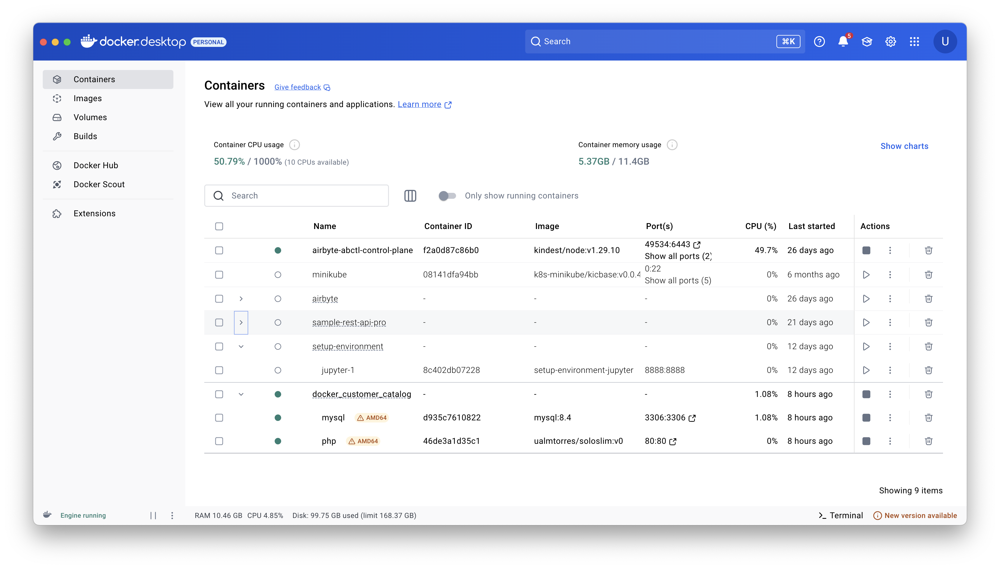
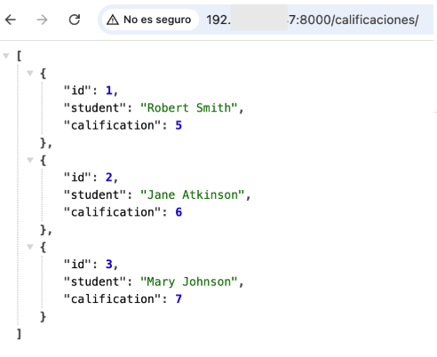
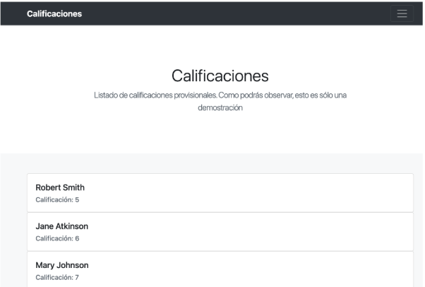
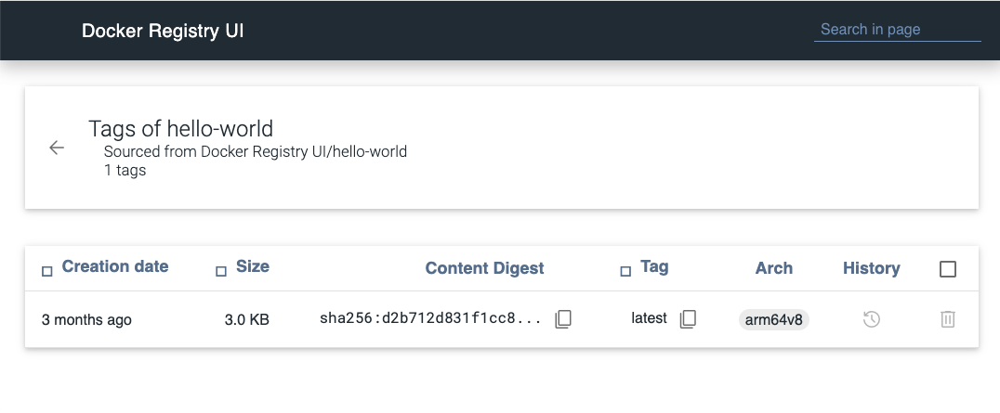

Resumen
Docker es un proyecto open source creado en 2013 y que ha supuesto una revolución para el desarrollo y despliegue de operaciones. Docker abstrae el hardware y el sistema operativo del host ejecutando las aplicaciones en contenedores, compartimentos aislados que contienen todos los recursos para una aplicación o servicio.
En este tutorial veremos cómo usar Docker para el desarrollo de aplicaciones sencillas, aprendiendo a crear servicios con Docker Compose y conocer la técnica de desarrollo de aplicaciones multicontenedor con Docker Compose
-
Conocer los componentes básicos de Docker
-
Crear contenedores a partir de imágenes de Docker Hub
-
Aprender a usar
Dockerfilepara la creación de imágenes -
Usar volúmenes para almacenamiento persistente
-
Usar Docker Compose para construir entornos de contenedores
-
Aprender la técnica de desarrollo de aplicaciones multicontenedor con Docker Compose
|
Tip
|
Disponibles los repositorios usados en este seminario: |
1. Conceptos básicos
1.1. Qué es Docker
-
Docker es una plataforma para que desarrolladores y administradores puedan desarrollar, desplegar y ejecutar aplicaciones en un entorno aislado denominado contenedor.
-
Docker permite separar las aplicaciones de la infraestructura acelerando el proceso de entrega de software a producción.
-
Proyecto open source creado en 2013 que hace uso de LXC (Linux Containers). LXC es un método de virtualización de a nivel de S.O.
|
Tip
|
Docker permite empaquetar una aplicación con todas sus dependencias para que pueda ser ejecutada en plataformas diferentes. El proceso de despliegue es rápido y repetible. |
Basta con ejecutar los tres comandos siguientes en una máquina con Docker instalado para tener una aplicación web que muestra un catálogo de clientes almacenados en una base de datos MySQL.
$ git clone https://github.com/ualmtorres/docker_customer_catalog.git
$ cd docker_customer_catalog
$ docker compose up -d
Para detener el ejemplo anterior, desde la carpeta donde se ha desplegado la aplicación ejecutaremos
$ docker compose downEsto eliminará todo lo que se ha creado para este ejemplo (contenedores y red de interconexión de dichos contenedores).
1.2. Docker vs Máquinas virtuales

-
Una máquina virtual proporciona un entorno con más recursos de los que necesitan la mayoría de las aplicaciones
-
Mayor número de contenedores que de MV en el mismo hardware.
-
Los contenedores se pueden ejecutar en hosts que sean máquinas virtuales.
1.3. Ventajas
-
Ligeros: Los contenedores comparten el kernel del host.
-
Intercambiables: Depliegue de actualizaciones en caliente.
-
Portables: Build local y ejecución en cualquier lugar.
-
Escalables: Aumento y distribución automática de réplicas de contenedores.
-
Apilables: Aumento del stack de servicios en caliente.
|
Note
|
Docker supone una revolución en los entornos de CI/CD. Tras la actualización del repositorio de proyecto, se crean contenedores para pasar las pruebas, se construyen las nuevas imágenes y se despliega la nueva versión de la aplicación sin parada del sistema. |
1.4. Contenedores e imágenes
-
Un contenedor se lanza a partir de una imagen.
-
Una imagen es una plantilla con las instrucciones de creación de un contenedor Docker:
-
Código
-
Runtime
-
Librerías
-
Variables de entorno
-
Archivos de configuración
-
2. Un ejemplo sencillo
2.1. Antes de nada
2.1.1. Instalación:
Obtenemos:
-
Daemon de docker
-
Cliente de docker, que es el que ejecutamos en la consola
-
Docker compose
-
Docker desktop (interfaz gráfica)
Tras esto, Docker Desktop se ejecutará en segundo plano y estará disponible para ejecutar comandos de Docker. Nos da una interfaz gráfica para ver los contenedores que tenemos en ejecución, las imágenes que tenemos, volúmenes para almacenamiento persistente, redes de interconexión entre contenedores, etc. Desde Docker Desktop y la consola podemos crear y eliminar contenedores, imágenes, volúmenes y redes. Desde la barra de herramientas de Docker podemos acceder a la configuración, al Learning Center y al entorno Docker de nuestro ordenador.

2.1.2. Crear cuenta en Docker Hub
Docker Hub es un registro público de imágenes (Lugar donde se almacenan imágenes): https://hub.docker.com
|
Note
|
Docker Hub permite en su plan libre tener un repositorio privado de imágenes. También permite automatizar la construcción de imágenes y su despliegue con repositorios GitHub y Bitbucket |
2.2. Docker engine

2.3. El Hola mundo
Desde una terminal, ejecutamos los siguientes comandos para comprobar que Docker está instalado y funcionando correctamente.
$ docker --version
Docker version 27.4.0, build bde2b89
$ docker run hello-world
Unable to find image 'hello-world:latest' locally
latest: Pulling from library/hello-world
c9c5fd25a1bd: Pull complete
Digest: sha256:c41088499908a59aae84b0a49c70e86f4731e588a737f1637e73c8c09d995654
Status: Downloaded newer image for hello-world:latest
Hello from Docker!
This message shows that your installation appears to be working correctly.
....2.4. Crear un contenedor Apache
$ docker run -d -p 82:80 --name apache httpd-
Descarga una imagen Apache (
httpd) si no existe localmente, lanza un contenedor y asocia el puerto 82 del host al puerto 80 del contenedor -
-dlanza el contenedor en modo dettached y libera la terminal -
-p 82:80asocia el puerto local 82 al puerto 80 del contenedor -
-name apacheasigna el nombreapacheal contenedor para que luego se más fácil interactuar con él (p.e. para ver sus logs, iniciar una sesión interactiva, eliminarlo, …)
|
Note
|
El primer puerto que aparece es el del host y el segundo el del contenedor |
|
Tip
|
También podemos usar el parámetro |

2.5. Funcionamiento básico con Docker

2.6. Imágenes interesantes de Docker
En la página inicial de Docker[https://hub.docker.com/, window="_blank"] se muestran distintas imágenes agrupadas por categorías. Destacamos:
-
alpine: Linux reducido
-
nginx: Servidor web Nginx
-
httpd: Servidor web Apache
-
ubuntu: Ubuntu
-
redis: Base de datos Redis (clave-valor)
-
mongo: Base de datos MongoDB (documentos)
-
mysql: Base de datos MySQL (relacional)
-
postgres: Base de datos PostgreSQL (relaional)
-
node: Node.js
-
registry: Registro de imágenes on-premise
-
php, elasticsearch, haproxy, wordpress, rabbitmq, python, openjdk, tomcat, jenkins, redmine, flink, spark, …
2.7. Operaciones sobre contenedores
2.7.1. Mostrar contenedores
$ docker ps
CONTAINER ID IMAGE COMMAND CREATED STATUS PORTS NAMES
99f6727e2506 httpd "httpd-foreground" 4 seconds ago Up 3 seconds 0.0.0.0:82->80/tcp apache|
Note
|
Los nombres generados para los contenedores son aleatorios si no se usa el parámetro |
2.7.2. Detener y reanudar contenedores
Primero, obtener con docker ps el CONTAINER ID o el nombre del contenedor que queremos detener.
$ docker ps
CONTAINER ID IMAGE COMMAND CREATED STATUS PORTS NAMES
99f6727e2506 httpd "httpd-foreground" 4 seconds ago Up 3 seconds 0.0.0.0:82->80/tcp apacheDetener el contenedor
Podemos detener el contenedor de dos formas, bien a partir de su nombre, que es más sencillo localizarlo, o bien a partir de su CONTAINER ID
-
Detener el contenedor mediante su nombre:
docker stop apache -
Detener el contenedor mediante su nombre:
docker stop 99f6727e2506
|
Caution
|
Al hacer |
Mostrar todos los contenedores, también los detenidos
$ docker ps -a
CONTAINER ID IMAGE COMMAND CREATED STATUS PORTS NAMES
99f6727e2506 httpd "httpd-foreground" 20 minutes ago Exited (0) 2 minutes ago apacheReanudar un contenedor
$ docker start apacheTambién se podría haber reanudado a partir de su CONTAINER ID
$ docker start 99f6727e2506Tras reanudar el contenedor, vuelve a aparecer cuando hacemos docker ps
$ docker ps
CONTAINER ID IMAGE COMMAND CREATED STATUS PORTS NAMES
99f6727e2506 httpd "httpd-foreground" 9 hours ago Up 10 seconds 0.0.0.0:82->80/tcp apacheDetener todos los contenedores en ejecución
Primero obtenenemos los identificadores de los contenedores en ejecución con docker ps -q. Ese comando lo podemos encerrar entre apóstrofes y pasar su resultado a otro comando en la misma línea.
$ docker stop `docker ps -q`Iniciar una lista de contenedores
$ docker start 99f6727e2506 9811efbf6e45 178c2d03f2e72.7.3. Abrir un terminal en un contenedor
Se puede iniciar especificando el nombre del contenedor (apache) o bien su CONTAINER ID. En este ejemplo se abre el terminal usando el CONTAINER ID
$ docker exec -it 99f6727e2506 bash
root@99f6727e2506:/usr/local/apache2#|
Note
|
Git Bash no permite abrir un terminal en un contenedor en Windows. Usar PowerShell o Símbolo del sistema. |
Se inicia una sesión como root en el contenedor. En la terminal del contenedor podemos ejecutar comandos del sistema operativo (ls, df -h, cat /proc/cpuinfo, …). La cantidad y el tipo de comandos dependerá de la imagen usada para crear el contenedor.
2.7.4. Copia de datos
|
Caution
|
El almacenamiento en un contenedor no es persistente. Se eliminan los datos escritos en él tras su eliminación. |
docker cp [OPTIONS] CONTAINER:SRC_PATH DEST_PATH|-
docker cp [OPTIONS] SRC_PATH|- CONTAINER:DEST_PATHComo ejemplo vamos a crear en nuestro host un archivo index.html y lo copiaremos en el contenedor para sustituir la página de inicio del servidor Apache.
<!-- Ejemplo de archivo index.html -->
<html>
<body>
<h1>Docker es una maravilla</h1>
</body>
</html>Ahora copiamos el archivo index.html al contenedor con docker cp. Se usará el nombre del contenedor o su CONTAINER ID para hacer referencia al contenedor.
$ docker cp index.html apache:/usr/local/apache2/htdocs/
2.7.5. Eliminación de un contenedor
Primero paramos el contenedor con docker stop y luego lo eliminamos con docker rm
$ docker stop apache
$ docker rm apacheTambién se puede eliminar directamente un contenedor en ejecución forzando su eliminación
$ docker rm -f <name-or-container-id>
Al crear un nuevo contenedor a partir de la imagen httpd comprobamos que la página de inicio modificada anteriormente se eliminó junto al contenedor eliminado.
$ docker run -d -p 82:80 httpd|
Tip
|
Podemos eliminar todos los contenedores creados a partir de una imagen con la secuencia de comandos siguiente (p.e. eliminar todos los contenedores creados a partir de una imagen |
Para eliminar todos los contenedores parados ejecutaremos
$ docker container prune2.8. Resumen de comandos básicos para contenedores
$ docker info
$ docker version
$ docker run <image> // Crea un contenedor a partir de una imagen. Si no tenemos la imagen en local, la descarga
$ docker run -d -p 82:80 --name my-nginx nginx: Crea un contenedor denominado my-nginx en modo deattached accesible desde el puerto 82
$ docker stop|start <name-or-id>: Detiene|Continúa un contenedor
$ docker ps -a: Listado de contenedores (-a muestra también los parados)
$ docker ps -q: Listado de los ids de los contenedores
$ docker stop `docker ps -q`: Para todos los contenedores que devuelve el subcomando `docker ps -q`
$ docker rm <name-or-id>: Borra un contenedor si está parado
$ docker rm -f <name-or-id>: Fuerza el borrado de un contenedor aunque esté parado
$ docker container prune: Elimina todos los contenedores parados
$ docker exec -it <name-or-id> sh: Abre una terminal en el contenedor
$ docker exec <name-or-id> ls: Ejecuta el comando ls en el contenedor para mostrar sus archivos
$ docker cp <name-or-id>:./dockerenv .: Copia el fichero dockerenv del contenedor en nuestro sistema de archivos local
$ docker rm -f `docker ps -a | grep "wordpress" | awk '{print $1}'`: Eliminar todos los contenedores creados a partir de una imagen|
Tip
|
Hay muchas Cheat Sheets con resumen de los comandos principales de Docker. Aquí puedes encontrar una que está bastante bien. |
3. Bind mounts
Un bind mount permite montar un archivo o directorio de nuestro sistema en un contenedor.
Dado que los contenedores no ofrecen almacenamiento persistente, todo lo que se almacene en ellos se perderá al eliminar el contenedor. A continuación se ilustran algunas situaciones habituales y cómo los bind mounts resultan útiles:
-
Uso de contenedores para el desarrollo de aplicaciones. El código de desarrollo estará en el sistema de archivos de nuestro host y usaremos un bind mount que permite ejecutar en el contenedor el código almacenado en nuestro host.
-
Uso de contenedores de bases de datos. La base de datos tiene que estar en el sistema de archivos de nuestro host y usaremos un bind mount para ejecutar el contenedor con la base de datos almacenada en nuestro host.
Los bind mounts (se puede usar más de uno) se definen en el momento de lanzar el contenedor con el parámetro -v, indicando en primer lugar la ruta del sistema de archivo local y en segundo lugar la ruta del sistema de archivos del contenedor. Por ejemplo
-v /home/ubuntu/webEstaticaBasica:/usr/local/apache2/htdocs
indica un bind mount que monta la carpeta local /home/ubuntu/webEstaticaBasica en la carpeta /usr/local/apache2/htdocs del contenedor.
-
Crear una carpeta para este ejemplo y entrar en ella.
-
Descargar este repositorio. Contiene una web estática sencilla con un único archivo (
index.html) -
Lanzar un contenedor Apache con un bind mount sobre la carpeta de la aplicación. Asignaremos el nombre
my-webal contenedor
$ git clone https://github.com/ualmtorres/webEstaticaBasica.git
$ docker run -d \
-p 80:80 \ (1)
--name my-web \ (2)
-v $(pwd)/webEstaticaBasica:/usr/local/apache2/htdocs \ (3)
httpd (4)-
Conservar el puerto original del contenedor
-
Asignar el nombre
my-webal contenedor -
Crear un bind mount entre la carpeta
webEstaticaBasicadel host a la carpeta/usr/local/apache2/htdocsdel contenedor. -
Usar la imagen
httpdde Apache
El resultado sería el siguiente

-
Crear una carpeta para este ejemplo y entrar en ella.
-
Descargar este script de inicialización de la base de datos Sporting Goods
$ curl https://gist.githubusercontent.com/ualmtorres/eb328b653fcc5964f976b22c320dc10f/raw/448b00c44d7102d66077a393dad555585862f923/init.sql --output init.sql -
Lanzar un contenedor MySQL con dos bind mounts, uno para inyectar el archivo de inicialización anterior, y otro para la carpeta de datos
$ docker run -d \
-p 3306:3306 \ (1)
--name my-mysql \ (2)
-v $(pwd)/init.sql:/docker-entrypoint-initdb.d/init.sql \ (3)
-v $(pwd)/data:/var/lib/mysql \ (4)
-e MYSQL_ROOT_PASSWORD=secret \ (5)
mysql (6)-
Conservar los puertos del contenedor
-
Asignar el nombre
my-mysqlal contenedor -
bind mount para pasar un script SQL de inicialización de una base de datos
-
bind mount para almacenar los datos del contenedor localmente en la carpeta
data -
Inicialización de la contraseña del
root. Se configura inicializando una variable de entorno en el contenedor. -
Usar la imagen de MySQL
En Windows (con Git Bash o PowerShell) sería:
docker run -d \
-p 3306:3306 \
--name my-mysql \
-v /"$(pwd)"/init.sql:/docker-entrypoint-initdb.d/init.sql \
-v /"$(pwd)"/data:/var/lib/mysql \
-e MYSQL_ROOT_PASSWORD=secret \
mysql|
Important
|
En Windows (con Git Bash o PowerShell) el comando sería |
A partir de este ejemplo, usando un cliente local de MySQL se podría acceder al contenedor directamente como localhost.
Si no se dispone de un cliente MySQL para ver si se ha inicializado correctamente la base de datos, se puede iniciar una sesión interactiva en el contenedor creado
$ docker exec -it my-mysql bash (1)
root@3c51f13a1046:/# mysql -u root -p (2)
Enter password:
Welcome to the MySQL monitor. Commands end with ; or \g.
Your MySQL connection id is 9
Server version: 8.0.19 MySQL Community Server - GPL
Copyright (c) 2000, 2020, Oracle and/or its affiliates. All rights reserved.
Oracle is a registered trademark of Oracle Corporation and/or its
affiliates. Other names may be trademarks of their respective
owners.
Type 'help;' or '\h' for help. Type '\c' to clear the current input statement.
mysql> show databases; (3)
+--------------------+
| Database |
+--------------------+
| SG | (4)
| information_schema |
| mysql |
| performance_schema |
| sys |
+--------------------+
5 rows in set (0.01 sec)-
Iniciar una sesión interactiva en el contenedor MySQL
-
Iniciar una sesión como
rooten MySQL. Recordar la contraseña facilitada al crear el contenedor (secret) -
Mostrar las bases de datos
-
Base de datos inializada por el script durante la creación del contenedor
4. Creación de imágenes propias
4.1. El Dockerfile
-
Para construir una imagen, se crea un
Dockerfilecon las instrucciones que especifican lo que va a ir en el entorno, dentro del contenedor (redes, volúmenes, puertos al exterior, archivos que se incluyen. -
Indica cómo y con qué construir la imagen.
-
Conseguimos que el build de la aplicación definida en el contenedor se comporte de la misma forma en cualquier lugar que se ejecute. Hacemos que sea repetible.
Ejemplo de Dockerfile
# Use an official Python runtime as a parent image
FROM python:2.7-slim
# Set the working directory to /app
WORKDIR /app
# Copy the current directory contents into the container at /app
ADD . /app
# Install any needed packages specified in requirements.txt
RUN pip install --trusted-host pypi.python.org -r requirements.txt
# Make port 80 available to the world outside this container
EXPOSE 80
# Define environment variable
ENV NAME World
# Run app.py when the container launches
CMD ["python", "app.py"]Fragmento de Dockerfile para construir una imagen con Ubuntu como base y definiendo dónde se montará un volumen externo
FROM ubuntu:latest
RUN apt update -y
RUN apt install -y python-pip python-dev
WORKDIR /app
ENV DEBUG=True
EXPOSE 80
VOLUME /data (1)-
Crea un punto de montaje en el contenedor. A la hora de crearlo le haremos corresponder normalmente un directorio del host
4.2. Imágenes
-
Se construyen con
docker builda partir de unDockerfile -
Se crean en un contexto (normalmente añadiendo archivos del directorio de trabajo del host a la imagen -p.e. el código fuente de la aplicación)
|
Note
|
El contexto es el conjunto de archivos y carpetas que se envían al demonio de Docker para construir la imagen. Normalmente es el directorio donde se encuentra el |
-
Con
FROM(normalmente primera instrucción delDockerfile) inicializamos el sistema de archivos de la imagen (p.e. si es ubuntu obtenemos el sistema de archivos de Ubuntu) -
Muchas imágenes disponibles en Docker Hub usan Alpine (una distribución ligera de Linux) en lugar de Ubuntu, Fedora o CentOS, debido a su menor tamaño
-
Cada instrucción del
Dockerfilegenera una nueva capa (con la diferencia) en ese sistema de archivos -
Al hacer
buildlas capas existentes en el registro local no se vuelven a crear
|
Note
|
Una imagen comprimida de Alpine está en torno a los 2 MB, mientras que una imagen comprimida de Ubuntu está entre 40 y 80 MB |
4.3. Distribución y ejecución de aplicaciones mediante Dockerfile
Supongamos el siguiente escenario. Contamos con el código de una aplicación disponible en un repositorio. Con la ayuda de Dockerfile podemos crear una imagen local con todo el software y configuración que necesita la aplicación para ejecutarse y crear después un contenedor a partir de dicha imagen. El código de la aplicación podrá ser copiado directamente al contenedor o se podrá montar un volumen en el sistema de archivos del host de forma que se pueda editar el código y no se pierdan los cambios al eliminar el contenedor.
Por tanto, una buena forma de distribuir una aplicación puede ser incluir un Dockerfile con la configuración de software que necesita para ejecutarse junto con el código de la aplicación.
El Dockerfile siguiente contiene los pasos a seguir para:
-
Crear una imagen con Apache, PHP y el framework Phalcon.
-
Incluir el código de la aplicación en el contenedor.
-
Exponer el puerto deseado.
-
Crear un punto de montaje en el contenedor. Este punto de montaje se podrá conectar al sistema de archivos del host con un bind mount al iniciar el contenedor.
FROM httpd (1)
ADD webEstaticaBasica /usr/local/apache2/htdocs (2)
EXPOSE 80 (3)
VOLUME /usr/local/apache2/htdocs (4)-
Imagen de base del servidor Apache
-
Añade el código de la carpeta
webEstaticaBasicadel sistema de archivos local a la carpeta/usr/local/apache2/htdocsdel contenedor -
Informa del puerto en el que escucha el contenedor
-
Ofrece la carpeta
/usr/local/apache2/htdocscomo punto de montaje
|
Note
|
Si se quieren ofrecer varios puntos de montaje se hará a través de un array. Si se quieren exponer varios puertos se hará enumerando la lista de puertos |
|
Tip
|
Configura tus propias imagen de base siguiendo el ejemplo del anexo [Configuración de imágenes de base] |
En un caso sencillo, podríamos reducir a que una aplicación está formada por su base de código y el entorno en el que se ejecuta. El código de esa aplicación posiblemente esté en un repositorio. Vamos a construir un contenedor a partir del código del repositorio y que lo ofrezca al host como un volumen. El proceso a seguir es:
-
Descargar el repositorio del código de la aplicación.
$ git clone https://github.com/ualmtorres/webEstaticaBasica.git -
Creación del
Dockerfileen la carpetawebEstaticaBasicapara la construcción de la imagen.FROM httpd ADD index.html /usr/local/apache2/htdocs EXPOSE 80 VOLUME /usr/local/apache2/htdocsTipEs buena idea incluir en el repositorio de la aplicación el
Dockerfile. Así se contará tanto con el código de la aplicación como con las instrucciones (en forma deDockerfile) para crear el contenedor de la aplicación con todo lo necesario.
4.3.1. Construcción de la imagen
El comando docker build crea una imagen nueva usando las instrucciones del Dockerfile.
$ docker build -t ualmtorres/web-estatica-basica:v0.1 .
-
Con
-tdefinimos una etiqueta o nombre de la imagen. Al construir la imagen pasa a nuestro registro local. -
Con
.indicamos a Docker que utilice el directorio actual como contexto para hace el build
|
Tip
|
Es buena práctica crear etiquetas con el nombre de usuario el Docker Hub, el nombre de la imagen y la versión. |
4.3.2. Listado de imágenes locales
$ docker image list
REPOSITORY TAG IMAGE ID CREATED SIZE
ualmtorres/web-estatica-basica v0.1 8a1fd86fd203 24 seconds ago 178MB4.4. Ejecución de la aplicación a partir de la imagen creada
Usaremos un bind mount para poder modificar el código de la aplicación y poder conservar los cambios. Posteriormente, podremos subir los cambios de la aplicación al repositorio.
$ docker run -d \
-p 83:80 \
--name webEstaticaBasica \
-v $(pwd):/var/www/html \
ualmtorres/web-estatica-basica:v0.1|
Note
|
En Windows sería |
|
Tip
|
A la hora de distribuir y actualizar aplicaciones podemos incluir la aplicación en la imagen. Con un ciclo de CI/CD tendríamos la aplicación actualizada al actualizar su repositorio. |
4.5. Subida de imágenes a Docker Hub
Hasta ahora la imagen creada está en el repositorio local de imágenes. Para subirla a un repositorio remoto, como Docker Hub, primero iniciaremos sesión con docker login y después podremos subir la imagen con el comando siguiente
docker push <user>/<image>:<tag>-
Al hacer
pushlas capas que ya estén subidas no se vuelven a subir. En cuanto una instrucción delDockerfilecambia una capa, invalida al resto y se volverán a crear las capas restantes. Por tanto, colocaremos antes en elDockerfilelo que menos cambie. -
Al hacer
pullsólo se descargan las capas nuevas. -
Si cambiamos en el host archivos de los que se incluyen en la imagen se genera una capa nueva invalidando la caché.
$ docker pull wordpress
$ docker run -d -p 80:80 --name my_wordpress wordpress4.6. Resumen de comandos básicos para imágenes
$ docker login
$ docker run -d nginx
$ docker pull <image>
$ docker image ls: Lista imágenes locales
$ docker inspect <image>: Propiedades de una imagen
$ docker image rm <image>: Elimina una imagen local5. Aplicaciones con varios contenedores
-
Docker Compose es una herramienta para definir y ejecutar aplicaciones Docker con varios contenedores.
-
De forma predeterminada, usaremos un archivo
docker-compose.ymlpara configurar los servicios de la aplicación. Los servicios son los componentes de la aplicación (p.e. un servicio para el almacenamiento de los datos y otro para el front-end). -
De forma predeterminada, si no se crea ninguna red de interconexión entre los contenedores, Compose crea una red bridge para que los contenedores puedan comunicarse entre sí. Estos contenedores pueden accederse entre sí por el nombre del servicio.
-
En un mismo host podemos tener varios entornos aislados. Compose usa nombres de proyecto para mantener a los entornos aislados. De forma predeterminada, Compose usa el nombre del directorio desde donde se lanza la aplicación.
-
docker compose versionpara obtener la versión y saber si está instalado. -
Instalación desde https://docs.docker.com/compose/install
5.1. Flujo de trabajo básico con Docker Compose
-
Crear el archivo
docker-compose.ymlcon los servicios de la aplicación (p.e. php y mysql) -
Construir y lanzar el entorno en modo dettached con
docker compose up -d -
Echar abajo el entorno con
docker compose down
|
Important
|
El comando El script siguiente devuelve los nombres de directorio desde los que se hayan lanzado todos los entornos de Compose que se tengan en ejecución. A partir de ahí, se trata de buscar en el sistema de archivos del host los nombres de directorio devueltos. |
5.2. Comandos básicos para Docker Compose
$ docker compose up -d Construye y lanza el entorno en modo dettached
$ docker compose pull Descarga las imágenes pero no inicia los contenedores
$ docker compose down [-v] Para y elimina los contenedores, redes y volúmenes creados por `docker compose up`. Con -v también elimina los volúmenes
$ docker compose rm [-fs] Borra los contedores parados. Con -fs los detiene y fuerza su borrado5.3. Ejemplo: Aplicación web (PHP) con soporte de Base de datos (MySQL)
-
Aplicación que muestra un listado de clientes almacenado en una base de datos MySQL.
-
Podemos distribuirla con un repositorio que incluya una carpeta
htmlcon la aplicación PHP. -
Al iniciar el servicio MySQL se ejecutará un script de inicialización de la base de datos.
-
Usaremos volúmenes externos para la base de datos y para la aplicación web para asegurar la persistencia de los cambios.
Comencemos clonando el repositorio de la aplicación:
$ git clone https://github.com/ualmtorres/docker_customer_catalog.gitEn ese repositorio se encuentra:
-
Un archivo
docker-compose.ymlque configura dos servicios: un servicio para almacenamiento de datos con MySQL y otro servicio para la aplicación PHP. -
Una carpeta
htmlcon la aplicación. Esta carpeta será la que monte la aplicación PHP de forma que el código de la aplicación no esté almacenada en el contenedor. -
Un script SQL
init.sqlque inicializa la base de datos de nuestra aplicación. La base de datos se almacena en nuestro host, garantizando almacenamiento persistente.
docker-compose.yml
version: "3.8"
services:
php:
container_name: php
build:
dockerfile: ./docker/php/Dockerfile
ports:
- "9000:9000"
volumes:
- ./html:/usr/share/nginx/html (1)
command: sh -c "cd /usr/share/nginx/html && php-fpm"
nginx:
container_name: nginx
image: nginx:stable-alpine
ports:
- "80:80"
volumes:
- ./html:/usr/share/nginx/html (2)
- ./docker/nginx/default.conf:/etc/nginx/conf.d/default.conf
depends_on:
- php
mysql: (3)
container_name: mysql
image: mysql:latest
environment:
MYSQL_ROOT_PASSWORD: secret
MYSQL_USER: example
MYSQL_PASSWORD: example
MYSQL_DATABASE: SG
ports:
- "3306:3306"
volumes:
- mysql_data:/var/lib/mysql (4)
- ./init.sql:/docker-entrypoint-initdb.d/init.sql (5)
volumes:
mysql_data:-
Montar una carpeta
htmlde nuestro host en la ruta en la que el serviciophpalmacena la aplicación -
Montar una carpeta
htmlde nuestro host en la ruta en la que el servicionginxalmacena la aplicación -
Nombre del contenedor. Este será el nombre que usará el contenedor de la aplicación PHP para poder acceder al contenedor de la base de datos
-
Montar un volumen externo para almacenar los datos de la base de datos. Este volumen se almacenará en el host y no se perderá al eliminar el contenedor
-
La imagen de MySQL ejecutará al inicio cualquier script que encuentre en
/docker-entrypoint-initdb.d/
Para lanzar la aplicación multicontenedor ejecutaremos el comando
$ cd docker_customer_catalog
$ docker compose up -d|
Note
|
Este archivo despliega un contenedor denominado |
Esto creará un contenedor para cada servicio y una red para que los contenedores de los servicios se puedan comunicar entre sí. El nombre de la red vendrá determinado por el nombre del directorio desde donde se lance Docker Compose. Los contenedores podrán referenciarse unos a otros por el nombre del contenedor.
Para probar esto, abrir una sesión interactiva en el contenedor PHP y hacer getent hosts para ver la tabla de nombres de host. En esta tabla se puede ver que el contenedor php puede referenciar al contenedor mysql por su nombre.
$ docker exec -it php bash
root@42e5c7369382:/var/www/slim_app# getent hosts mysql (1)
172.18.0.3 mysql
root@42e5c7369382:/var/www/slim_app#-
Se usa el nombre del contenedor asignado en
docker-compose.ymlpara referenciarlo. La IP es la dirección IP del contenedormysqlen la red creada por Docker Compose
|
Important
|
Aunque en el |
index.php con el código de la aplicación<!DOCTYPE html>
<html>
<head>
<meta charset="utf-8">
<meta http-equiv="X-UA-Compatible" content="IE=edge">
<title>Web PHP-MySQL con Docker</title>
<link rel="stylesheet" href="https://stackpath.bootstrapcdn.com/bootstrap/4.1.1/css/bootstrap.min.css" integrity="sha384-WskhaSGFgHYWDcbwN70/dfYBj47jz9qbsMId/iRN3ewGhXQFZCSftd1LZCfmhktB" crossorigin="anonymous">
</head>
<body>
<div class = "container">
<div class="jumbotron">
<h1 class="display-4">Docker app</h1>
<p class="lead">Ejemplo de aplicacion PHP y MySQL con contenedores</p>
<hr class="my-4">
<p>Usa un contenedor para Apache/PHP y otro para MySQL con almacenamiento de aplicación y de datos en volúmenes externos</p>
</div>
<table class="table table-striped table-responsive">
<thead>
<tr>
<th>Name</th>
<th>Credit Rating</th>
<th>Address</th>
<th>City</th>
<th>State</th>
<th>Country</th>
<th>Zip</th>
</tr>
</thead>
<tbody>
<?php
$host = "mysql";
$username = "root";
$password = "secret";
$database = "SG";
$mysqli = new mysqli($host, $username, $password, $database); (1)
$cadenaSQL = "select * from s_customer";
$resultado = $mysqli->query($cadenaSQL);
while ($fila = $resultado->fetch_object()) {
echo "<tr><td> " .$fila->name .
"</td><td>" . $fila->credit_rating .
"</td><td>" . $fila->address .
"</td><td>" . $fila->city .
"</td><td>" . $fila->state .
"</td><td>" . $fila->country .
"</td><td>" . $fila->zip_code .
"</td></tr>";
}
?>
</tbody>
</table>
</div>
<script src="https://code.jquery.com/jquery-3.3.1.slim.min.js" integrity="sha384-q8i/X+965DzO0rT7abK41JStQIAqVgRVzpbzo5smXKp4YfRvH+8abtTE1Pi6jizo" crossorigin="anonymous"></script>
<script src="https://cdnjs.cloudflare.com/ajax/libs/popper.js/1.14.3/umd/popper.min.js" integrity="sha384-ZMP7rVo3mIykV+2+9J3UJ46jBk0WLaUAdn689aCwoqbBJiSnjAK/l8WvCWPIPm49" crossorigin="anonymous"></script>
<script src="https://stackpath.bootstrapcdn.com/bootstrap/4.1.1/js/bootstrap.min.js" integrity="sha384-smHYKdLADwkXOn1EmN1qk/HfnUcbVRZyYmZ4qpPea6sjB/pTJ0euyQp0Mk8ck+5T" crossorigin="anonymous"></script>
</body>
</html>-
El nombre con el que se accede a la base de datos MySQL es el nombre del contenedor usado en
docker-compose.yml
Archivo init.sql para inicializar la base de datos Descargar init.sql
La aplicación quedará disponible
6. Desarrollo con Docker Compose
A la hora de desarrollar una aplicación con varios contenedores que tienen que trabajar de forma coordinada (p.e. una aplicación de frontend y backend) usaremos Docker Compose creando un servicio para cada componente (p.e. uno para el front y otro para la API). Cada uno de esos componentes es susceptible de empaquetarse como una imagen Docker. Por tanto, cada componente debería incluir su Dockerfile para construir su imagen correspondiente. Así, la estructura recomendada para desarrollar con Docker Compose podría ser algo parecido a esto:
.
├── docker-compose.yml (1)
├── servicio-1 (2)
│ ├── Dockerfile (3)
│ └── Base de código del servicio 1
├── servicio-2
│ ├── Dockerfile
│ └── Base de código del servicio 2
...
└── servicio-n
├── Dockerfile
└── Base de código del servicio n-
Archivo con la configuración de ejecución
-
Directorio para cada servicio/componente
-
Instrucciones para la creación de la imagen del servicio
Para ilustrar esto usaremos un ejemplo ficticio que desarrolle una API con calificaciones y un front para presentar los datos de la API. A continuación se muestran los pasos:
$ mkdir calificaciones
$ cd calificaciones6.1. Desarrollo de la API
Se trata de una API en Python con FastAPI. Por sencillez, la API contiene los datos directamente en JSON para no añadir otro componente de bases de datos al ejemplo. Así conseguiremos un ejemplo más sencillo y no nos perderemos en los detalles. El objetivo es ver cómo desarrollar con Docker Compose.
-
Desde el directorio del proyecto crear una carpeta
apipara la API y unaroutespara las rutas de la API. -
En la carpeta
apicrear el archivorequirements.txtcon las dependencias de la API. -
En carpeta
api/routescrear los archivos:-
test.pycon una ruta de prueba. -
calificaciones.pycon la ruta de la API para obtener las calificaciones. Este código incluye los datos en JSON y dos endpoints: uno para obtener todas las calificaciones y otro para obtener la calificación de un estudiante concreto por su id.
-
-
En la carpeta
apicrear el archivomain.pycon el código principal de la API que arranca el servidor y define las rutas. -
En la carpeta
apicrear elDockerfilecon las instrucciones para crear la imagen de la APIFROM python:3.9-slim (1) WORKDIR /app (2) COPY ./requirements.txt /tmp/requirements.txt (3) RUN pip install -r /tmp/requirements.txt (4) COPY ../ ./ (5) EXPOSE 8000 (6) CMD [ "uvicorn", "main:app", "--host", "0.0.0.0", "--port", "8000", "--reload" ] (7)-
Imagen de base para la ejecución de la API.
-
Definir el directorio de trabajo dentro del contenedor
-
Copiar el archivo de dependencias al contenedor
-
Instalar las dependencias de la API
-
Incluir el código de la API en el contenedor. Como el
Dockerfileestá en la carpetaapi, para copiar todo el código de la API hay que subir un nivel (../) y copiar todo (./) -
Indicar el puerto por el que escucha la API (8000 por ser FastAPI)
-
Comando para arrancar la API con Uvicorn (servidor ASGI para Python)
-
-
En la carpeta de la aplicación (un nivel por encima de
api) crear el archivodocker-compose.ymlpara poder ejecutar la API. El archivodocker-compose.ymllo creamos un directorio por encima deapiporque la especificación del volumen del código de la API en el archivodocker-compose.ymlse hace un nivel por encima del directorioapiservices: calificaciones-api: container_name: calificaciones-api build: context: ./api (1) dockerfile: Dockerfile (2) volumes: - "./api:/app" (3) ports: - "8000:8000"-
Carpeta donde se encuentra el
Dockerfilepara crear la imagen de la API -
Nombre del
Dockerfilepara crear la imagen de la API. Esto es opcional si el archivo se llamaDockerfile -
Volumen en el host montado en el directorio
/appdel contenedor
-
Si desplegamos el docker-compose.yml veremos la API ejecutándose en el puerto 8000 (http://localhost:8000/calificacion)

6.2. Desarrollo del front
El frontend lo desarrollaremos con Flask. Será un front muy sencillo que consuma la API desarrollada anteriormente y muestre los datos en una tabla HTML.
-
Desde el directorio del proyecto crear una carpeta
frontendpara el código del frontend. -
En la carpeta
frontendcrear el archivorequirements.txtcon las dependencias del frontend. -
Crear una carpeta
src. Dentro de ella:-
Crear una carpeta
templatespara las plantillas HTML. -
Crear una carpeta
staticpara los archivos estáticos (CSS, JS, imágenes, etc.)
-
-
En la carpeta
src/templatescrear el archivoindex.htmlcon la plantilla HTML para mostrar las calificaciones. -
En la carpeta
srccrear el archivoapp.pycon el código principal del front que arranca el servidor Flask y define la ruta principal que consume la API y renderiza la plantilla HTML. -
Crear el
Dockerfilecon las instrucciones para crear la imagen del frontend# Dockerfile para el proyecto calificaciones-frontend # Usar una imagen base de Python FROM python:3.9-slim # Establecer el directorio de trabajo WORKDIR /app # Copiar el archivo de requisitos y la aplicación al contenedor COPY requirements.txt requirements.txt COPY src/ ./src/ # Instalar las dependencias RUN pip install --no-cache-dir -r requirements.txt # Exponer el puerto en el que la aplicación se ejecutará EXPOSE 5000 # Comando para ejecutar la aplicación CMD ["python", "src/app.py"]
Modificar el archivo docker-compose.yml (un nivel por encima de front) añadiéndole el servicio para poder ejecutar el front.
services:
calificaciones-api:
container_name: calificaciones-api
build:
context: ./api
dockerfile: Dockerfile
volumes:
- "./api:/app"
ports:
- "8000:8000"
calificaciones-frontend: <1
container_name: calificaciones-frontend
build:
context: ./frontend (2)
dockerfile: Dockerfile
volumes:
- "./frontend:/app" (3)
ports:
- "80:5000" (4)
depends_on:
- calificaciones-api-
Servicio para el frontend
-
Carpeta donde se encuentra el
Dockerfilepara crear la imagen del frontend. El nombre delDockerfilees opcional si se llamaDockerfile -
Volumen en el host montado en el directorio
/appdel contenedor -
Mapping de puertos para el frontend. La API se sirve en el puerto 8000 del host y el frontend en el puerto 80 del host
Si volvemos a desplegar el docker-compose.yml con docker compose up -d, se mantiene intacto lo ya desplegado y se despliegan las modificaciones. El frontend se verá ejecutándose en el puerto 80 (http://localhost)

6.3. Construcción de las imágenes
Una vez desarrollados los servicios de la aplicación podríamos proceder a la construcción de sus imágenes. Se trataría de un proceso manual en el que ejecutaríamos el comando docker build en cada una de los directorios de los servicios desarrollados
-
En el directorio de la API:
docker build -t ualmtorres/calificaciones-api:v0.1 . -
En el directorio del frontend:
docker build -t ualmtorres/calificaciones-frontend:v0.1 .
6.4. Prueba de la aplicación
Si ahora quisiéramos desplegar la aplicación con Docker Compose nos encontramos con el problema que el archivo docker-compose.yml usa como imagen base las imágenes base creadas para el proceso de desarrollo. Sin embargo, ahora queremos desplegar la aplicación usando las imágenes creadas para la API y el frontend. Este problema lo podemos solventar rápidamente creando otro archivo para Docker Compose (p.e. docker-compose-images.yml) y lanzar Docker Compose con ese archivo. docker-compose-images.yml ya incorpora el código de la API y del frontend en sus respectivas imágenes. Esta sería la forma en la que normalmente se desplegaría la aplicación en un entorno de producción. Así, es preferible tener dos archivos docker-compose.yml: uno para el desarrollo y otro para el despliegue en producción.
|
Note
|
Es una prática habitual que el archivo de producción de Docker compose no contega el código de la aplicación montado como volumen. Esto evita que se puedan hacer cambios en el código de la aplicación en producción. No obstante, lo que sí es habitual es montar volúmenes para los datos que necesite la aplicación (p.e. bases de datos, ficheros de configuración, etc.) |
services:
calificaciones-api:
container_name: calificaciones-api
image: ualmtorres/calificaciones-api:0.1 (1)
ports:
- "8000:8000"
calificaciones-frontend:
container_name: calificaciones-frontend
image: ualmtorres/calificaciones-frontend:0.1 (2)
ports:
- "80:5000"
depends_on:
- calificaciones-api-
Imagen de la API como base
-
Imagen del front como base
7. Otras cosas interesantes
7.1. Microservicios y contenedores
Con microservicios:
-
Establecemos un contrato, normalmente mediante una API REST, versionada para no romper funcionalidad a usuarios anteriores
-
Ocupan un tamaño reducido y suelen realizar una tarea muy concreta
-
Autenticación,
-
API REST. Toda la API vs cada endpoint
-
Estadísticas consumo de recursos
-
Exportar salida a central de logs
-
…
-
-
Dockerizar con cabeza
-
Comenzamos pasando todo nuestro sistema o MV a un contenedor Docker. Con sólo eso ya conseguimos ejecutar nuestra sistema en distintas máquinas con distintos SO y configuraciones.
-
No intentar pasar de una vez de aplicación monlítica a microservicios diminutos
-

7.2. Despliegue de aplicaciones con varios archivos Docker Compose
En ocasiones una aplicación puede estar formada por varios archivos docker-compose.yml. Por ejemplo, un archivo para los servicios comunes (base de datos, caché, colas de mensajes, etc.) y otro archivo para los servicios específicos de la aplicación (frontend, backend, etc.). En estos casos, podemos usar la opción -f de Docker Compose para especificar varios archivos docker-compose.yml. Docker Compose combinará los archivos especificados y desplegará la aplicación. Sin embargo, hay que tener en cuenta que si no se especifica ninguna red, Docker Compose creará una red para cada archivo docker-compose.yml. Por tanto, si los servicios de los distintos archivos tienen que comunicarse entre sí, es necesario definir una red común en los distintos archivos. Si no se define ninguna red, los servicios de los distintos archivos no podrán comunicarse entre sí porque estarían en redes distintas. Para definir una red común, se puede usar la opción external en la definición de la red de los archivos docker-compose.yml.
Para ilustrar esto, supongamos que tenemos dos archivos docker-compose.yml: docker-compose-db.yml para los servicios comunes y docker-compose-app.yml para los servicios específicos de la aplicación. El siguiente fragmento ilustra la definición de una red común en ambos archivos.
`docker-compose-db.yml`
----
services:
db:
image: mysql:latest
networks:
- common-network (1)
networks:
common-network:
external: true (2)
----`docker-compose-app.yml`
----
services:
app:
image: myapp:latest
networks:
- common-network (1)
networks:
common-network:
external: true (2)
----
<1> Definición de la red común en los servicios
<2> Indicación de que la red es externa y ya existe en el hostPara desplegar la aplicación con ambos archivos docker-compose.yml, se usaría el siguiente comando:
$ docker compose -f docker-compose-db.yml -f docker-compose-app.yml up -d7.3. El ecosistema Docker

7.4. Instalar un registro de imágenes propio
Es posible tener un registro propio para imágenes por cuestiones de seguridad y confidencialidad. Veamos cómo crear un registro propio mediante contenedores. Se trata de un despliegue Docker Compose que incluye un servicio para el registro (servidor) y otro para la interfaz web del registro. La interfaz web es opcional, pero es muy útil para ver las imágenes que tenemos en el registro y para subir imágenes al registro.
services:
registry-ui: (1)
image: joxit/docker-registry-ui:main
restart: always
ports:
- 80:80 (2)
environment:
- SINGLE_REGISTRY=true
- REGISTRY_TITLE=Docker Registry UI
- DELETE_IMAGES=true
- SHOW_CONTENT_DIGEST=true
- NGINX_PROXY_PASS_URL=http://registry-server:5000 (3)
- SHOW_CATALOG_NB_TAGS=true
- CATALOG_MIN_BRANCHES=1
- CATALOG_MAX_BRANCHES=1
- TAGLIST_PAGE_SIZE=100
- REGISTRY_SECURED=false
- CATALOG_ELEMENTS_LIMIT=1000
container_name: registry-ui
registry-server: (4)
image: registry:2.8.2
restart: always
environment:
REGISTRY_HTTP_HEADERS_Access-Control-Allow-Origin: "[http://registry.example.com]"
REGISTRY_HTTP_HEADERS_Access-Control-Allow-Methods: "[HEAD,GET,OPTIONS,DELETE]"
REGISTRY_HTTP_HEADERS_Access-Control-Allow-Credentials: "[true]"
REGISTRY_HTTP_HEADERS_Access-Control-Allow-Headers: "[Authorization,Accept,Cache-Control]"
REGISTRY_HTTP_HEADERS_Access-Control-Expose-Headers: "[Docker-Content-Digest]"
REGISTRY_STORAGE_DELETE_ENABLED: "true"
volumes:
- ./registry/data:/var/lib/registry (5)
container_name: registry-server-
Interfaz web para el registro
-
Puerto de la interfaz web
-
URL del registro
-
Registro de imágenes
-
Volumen para almacenar las imágenes del registro. Este volumen se almacenará en el host y no se perderá al eliminar el contenedor
Para desplegar el registro de imágenes propio, basta con ejecutar el siguiente comando en el directorio donde se encuentra el archivo docker-compose.yml
$ docker compose up -dEsto creará un contenedor para el registro de imágenes y otro para la interfaz web del registro. El nombre del contenedor del registro será registry-server y el de la interfaz web será registry-ui. La interfaz web estará disponible en el puerto 80 del host.
El ejemplo será obtener la imagen hello-world` de Docker Hub y subirla a nuestro propio registro
// En nuestro equipo
$ docker pull hello-world (1)
$ docker tag hello-world localhost/hello-world (2)
$ docker push localhost/hello-world (3)-
Descargar la imagen de prueba
hello-world`al registro local -
La imagen se etiqueta añadiéndole como prefijo el host de nuestro registro
-
Subida de la imagen al registro

Harbor es una opción muy interesante para disponer de un registro propio de imágenes. Permite definir reglas de control de acceso, analizar imágenes en busca de vulnerabilidades y añadir una firma de confianza a las imágenes.
Para subir una imagen a Harbor:
-
Es necesario pertenecer a un proyecto
-
Iniciar sesión
$ docker login <harbor-server> -
Etiquetar la imagen siguiendo este patrón
$ docker tag <image> <server>/<project>/<image>[:<version>] -
Subir imagen
$ docker push <server>/<project>/<image>[:<version>]
8. Licencia
Licencia CC BY-NC-ND 4.0
Copyright (c) 2025 [Manuel Torres - Departamento de Informática - Universidad de Almería]
Este proyecto está licenciado bajo la Licencia CC BY-NC-ND 4.0. Esto significa que puedes compartir el proyecto siempre que cites al autor, no lo uses para fines comerciales y no realices obras derivadas.